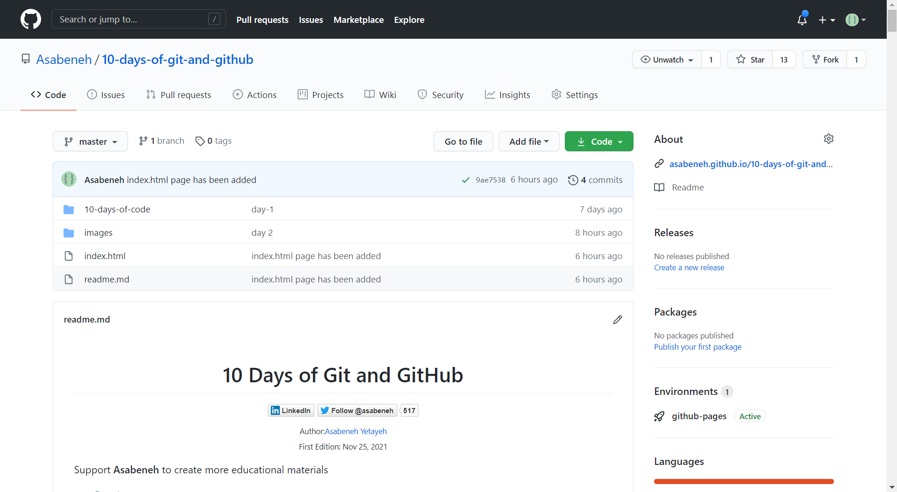
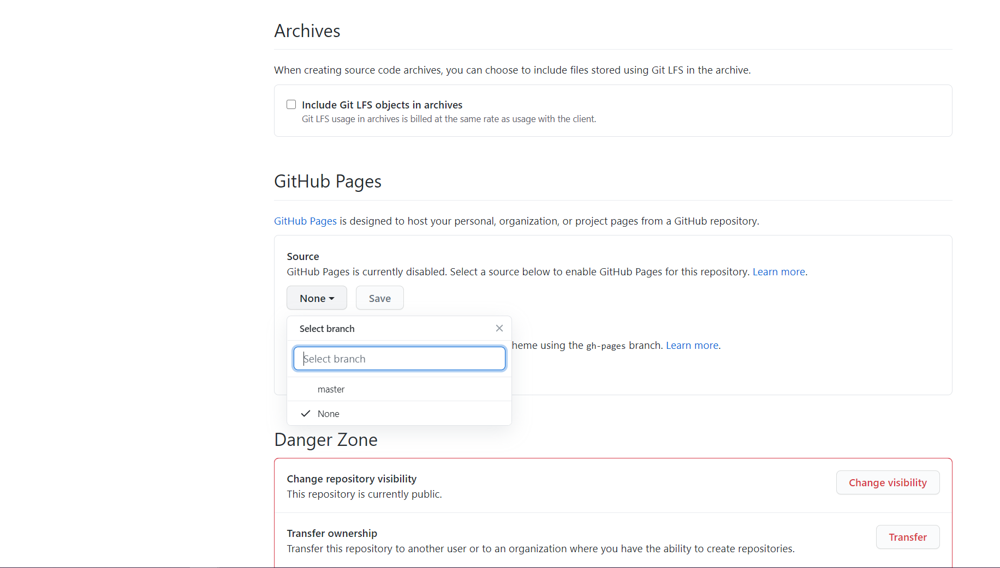
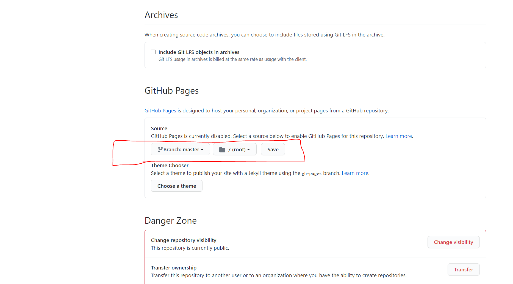
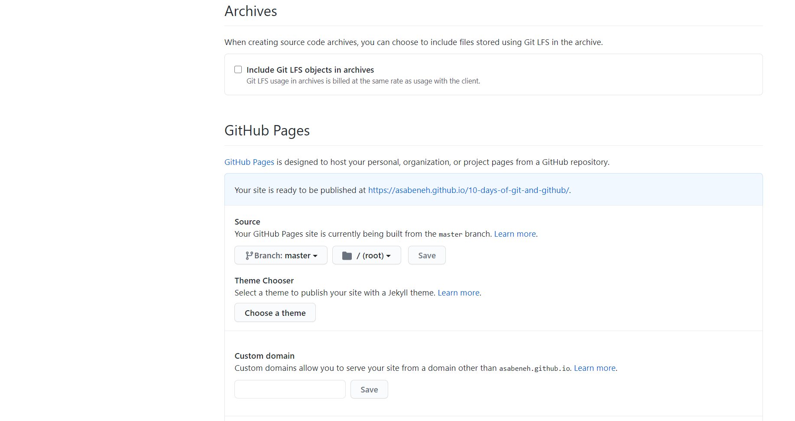
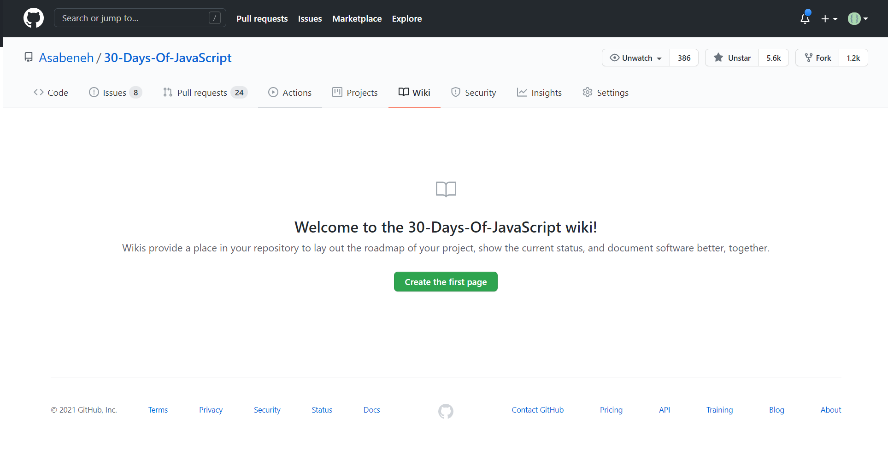

- Day 1
-
Day 2
-
Git and GitHub
- 1. Install Git
- 2. Checking status of the repository
- 3. Configure your name and your email
- 4. Create a local git repository
- 5. Initialize Git
- 6. Add file to the staging area
- 7. Unstage a file
- 8. Commit the changes
- 9. Git log
- 10. Git check out
- 11. Creating a branch
- 12. Create account on GitHub
- 13. Create Repository on GitHub
- 14. Connecting git with remote repository
- 15. Push
- 16. Merge
- 17. Pull
- Git cheat sheet:
-
Git and GitHub
- Day 3
- Day 4
- Day 5
Day 1
Basic Command Lines
Developers need to know basic Unix commands. Some tasks necessary need to be done using git bash, mac terminal, or window command prompt. In this tutorial, we will use git bash to learn the basics of the Unix command which you may need as a developer. This is not an exhaustive list but it is enough for daily uses. To make use of git bash first you should install git. You can install by just clicking the next button up to the end of the installation.
Current working directory
Checking the working directory using the command pwd.
Asabeneh@DESKTOP-KGC1AKC MINGW64 ~$ pwd
/c/Users/Asabeneh
Navigating directory
Now, let's go to the Desktop using cd(change directory).
Asabeneh@DESKTOP-KGC1AKC MINGW64 ~$ cd Desktop
Asabeneh@DESKTOP-KGC1AKC MINGW64 ~/Desktop
To check where you are at, use the pwd command age
Asabeneh@DESKTOP-KGC1AKC MINGW64 ~/Desktop$ pwd
/c/Users/Asabeneh/Desktop
We use cd to get into a directory(folder) and we use cd.. to get out from a directory, in other words, we use cd to go forward into a directory and cd .. to go backward from a directory.
Making Directory
Now, let's create a directory inside the Desktop. Call the name of the directory, 10-days-of-code. You give it any name but I am in favor of this name. Use the mkdir command to make a directory(folder)
Asabeneh@DESKTOP-KGC1AKC MINGW64 ~/Desktop$ mkdir 10-days-of-code
Now let's go to the 10-days-of-code folder using cd command.
Asabeneh@DESKTOP-KGC1AKC MINGW64 ~/Desktop$ cd 10-days-of-code
Asabeneh@DESKTOP-KGC1AKC MINGW64 ~/Desktop/10-days-of-code
Asabeneh@DESKTOP-KGC1AKC MINGW64 ~/Desktop/10-days-of-code$ pwd
/c/Users/Asabeneh/Desktop/10-days-of-code
List files and directories
We can check the files and directories we have in a directory(folder) using the ls command.
Asabeneh@DESKTOP-KGC1AKC MINGW64 ~/Desktop/10-days-of-code$ ls
No files or directories were found in the 10-days-of-code folder because we didn't create them yet. Let's create some directories
Asabeneh@DESKTOP-KGC1AKC MINGW64 ~/Desktop/10-days-of-code$ mkdir day-1
Now let's check if there are some files or directories in the 10-days-of-code folder.
Asabeneh@DESKTOP-KGC1AKC MINGW64 ~/Desktop/10-days-of-code$ ls
day-1
Now, you see a day-1 folder that you created.
Now let's create multiple folders at one and use ls to see all the directories we have in the 10-days-of-code folder.
Making multiple folders at once
Asabeneh@DESKTOP-KGC1AKC MINGW64 ~/Desktop/10-days-of-code$ mkdir day-2 day-3 day-4 day-5 day-6 day-7 day-8 day-9 day-10
Using ls we can see all the directories we have in the 10-days-of-code
Asabeneh@DESKTOP-KGC1AKC MINGW64 ~/Desktop/10-days-of-code
$ ls
day-1 day-10 day-2 day-3 day-4 day-5 day-6 day-7 day-8 day-9
Detail list
Let's see a detailed list of the directories using multiple commands, ls -la.
Asabeneh@DESKTOP-KGC1AKC MINGW64 ~/Desktop/10-days-of-code
$ ls -la
total 20
drwxr-xr-x 1 Asabeneh 197121 0 Jan 19 02:16 .
drwxr-xr-x 1 Asabeneh 197121 0 Jan 19 02:05 ..
drwxr-xr-x 1 Asabeneh 197121 0 Jan 19 02:12 day-1
drwxr-xr-x 1 Asabeneh 197121 0 Jan 19 02:16 day-10
drwxr-xr-x 1 Asabeneh 197121 0 Jan 19 02:16 day-2
drwxr-xr-x 1 Asabeneh 197121 0 Jan 19 02:16 day-3
drwxr-xr-x 1 Asabeneh 197121 0 Jan 19 02:16 day-4
drwxr-xr-x 1 Asabeneh 197121 0 Jan 19 02:16 day-5
drwxr-xr-x 1 Asabeneh 197121 0 Jan 19 02:16 day-6
drwxr-xr-x 1 Asabeneh 197121 0 Jan 19 02:16 day-7
drwxr-xr-x 1 Asabeneh 197121 0 Jan 19 02:16 day-8
drwxr-xr-x 1 Asabeneh 197121 0 Jan 19 02:16 day-9
Using the above command, we can see the detailed view of a directory or a file
Creating file
Now, let's see how to create a file. We can use the touch command to write a file.
Asabeneh@DESKTOP-KGC1AKC MINGW64 ~/Desktop/10-days-of-code$ touch day-1.txt
Asabeneh@DESKTOP-KGC1AKC MINGW64 ~/Desktop/10-days-of-code$ ls
day-1 day-1.txt day-10 day-2 day-3 day-4 day-5 day-6 day-7 day-8 day-9
As you can see, there is day-1.txt in the list. That means we have created the day-1.txt file inside the 10-days-of-code folder. You can also you ls -la command to use the detailed view of the folders and file.
Opening and writing on file
Now, let's open the day-1.txt file and add some text to it. We use the nano command to open and write.
Asabeneh@DESKTOP-KGC1AKC MINGW64 ~/Desktop/10-days-of-code$ nano day-1.txt

As you can see from the above figure, the cursor is active and you can write on the pad. You can only use arrow keys to move the cursor left, right, up, and down. Let's write some text on the opened pad. There are instructors at the bottom that tells how to exit. For instance ctrl + x is to exit. When you exit either you save or cancel which comes when you click ctrl + x.

Now you can save the modified file by writing Y or you can cancel it by clicking ctrl + c.
After you write Y then click enter.
Opening file to read
We can use the cat command just only to read the file.
Asabeneh@DESKTOP-KGC1AKC MINGW64 ~/Desktop/10-days-of-code$ cat day-1.txt
This is my first text. I have never written on nano text editor before
Copy file
Let's have day-1-backup.txt from day-1.txt by copying using the cp command.
Asabeneh@DESKTOP-KGC1AKC MINGW64 ~/Desktop/10-days-of-code
$ cp day-1.txt day-1-backup.txt
Asabeneh@DESKTOP-KGC1AKC MINGW64 ~/Desktop/10-days-of-code $ ls
day-1 day-1.txt day-10 day-1-backup.txt day-2 day-3 day-4 day-5 day-6 day-7 day-8 day-9
Rename file
The mv command is used both to change the name of a file and to move a file into a different directory.
Let's have more files in the 10-days-of-code folder. We can use the touch command to create files.
Asabeneh@DESKTOP-KGC1AKC MINGW64 ~/Desktop/10-days-of-code$ touch day-2.txt day-3.txt day-4.txt day-5.txt
Asabeneh@DESKTOP-KGC1AKC MINGW64 ~/Desktop/10-days-of-code$ ls
day-1 day-10 day-2 day-3 day-4 day-5 day-6 day-8
day-1.txt day-1-backup.txt day-2.txt day-3.txt day-4.txt day-5.txt day-7 day-9
Now, let's rename the day-2.txt to second-day.txt using the mv command.
Asabeneh@DESKTOP-KGC1AKC MINGW64 ~/Desktop/10-days-of-code$ mv day-2.txt second-day.txt
Asabeneh@DESKTOP-KGC1AKC MINGW64 ~/Desktop/10-days-of-code$ ls
day-1 day-10 day-2 day-3.txt day-4.txt day-5.txt day-7 day-9
day-1.txt day-1-backup.txt day-3 day-4 day-5 day-6 day-8 second-day.txt
Let's rename the day-10 directory to day-ten.
Asabeneh@DESKTOP-KGC1AKC MINGW64 ~/Desktop/10-days-of-code$ mv day-10 day-ten
Asabeneh@DESKTOP-KGC1AKC MINGW64 ~/Desktop/10-days-of-code$ ls
day-1 day-1-backup.txt day-3 day-4 day-5 day-6 day-8 day-ten
day-1.txt day-2 day-3.txt day-4.txt day-5.txt day-7 day-9 second-day.txt
Moving file and directory
The mv and cp commands can be used to put files into a directory. The cp moves the copy of the file or the folder to another folder, however, mv just move it without copying. Let's move the day-1.txt day-1 folder.
Asabeneh@DESKTOP-KGC1AKC MINGW64 ~/Desktop/10-days-of-code$ mv day-1.txt day-1
Asabeneh@DESKTOP-KGC1AKC MINGW64 ~/Desktop/10-days-of-code$ ls
day-1 day-2 day-3.txt day-4.txt day-5.txt day-7 day-9 second-day.txt
day-1-backup.txt day-3 day-4 day-5 day-6 day-8 day-ten
Asabeneh@DESKTOP-KGC1AKC MINGW64 ~/Desktop/10-days-of-code$ cd day-1
Asabeneh@DESKTOP-KGC1AKC MINGW64 ~/Desktop/10-days-of-code/day-1$ ls
day-1.txt
Let's try to move a file using the cp command. Let's move the day-1-backup.txt to day-1 folder
Asabeneh@DESKTOP-KGC1AKC MINGW64 ~/Desktop/10-days-of-git/10-days-of-code
$ cp day-1-backup.txt day-1
Asabeneh@DESKTOP-KGC1AKC MINGW64 ~/Desktop/10-days-of-git/10-days-of-code
$ cd day-1
Asabeneh@DESKTOP-KGC1AKC MINGW64 ~/Desktop/10-days-of-git/10-days-of-code/day-1
$ ls
day-1.txt day-1-backup.txt
Asabeneh@DESKTOP-KGC1AKC MINGW64 ~/Desktop/10-days-of-git/10-days-of-code/day-1
$ cd ..
Asabeneh@DESKTOP-KGC1AKC MINGW64 ~/Desktop/10-days-of-git/10-days-of-code
$ ls
day-1 day-2 day-3.txt day-4.txt day-5.txt day-7 day-9 second-day.txt
day-1-backup.txt day-3 day-4 day-5 day-6 day-8 day-ten
The copied version of day-1-backup.txt moved to a day-1 folder. Now let's create multiple backup files first and move them to a backup folder
Asabeneh@DESKTOP-KGC1AKC MINGW64 ~/Desktop/10-days-of-code$ mkdir backups
Asabeneh@DESKTOP-KGC1AKC MINGW64 ~/Desktop/10-days-of-code$ cd backups
Asabeneh@DESKTOP-KGC1AKC MINGW64 ~/Desktop/10-days-of-code/backups$ touch day-2-backup.txt day-3-backup.txt
Asabeneh@DESKTOP-KGC1AKC MINGW64 ~/Desktop/10-days-of-code/backups$ ls
day-2-backup.txt day-3-backup.txt
Moving multiple files
Asabeneh@DESKTOP-KGC1AKC MINGW64 ~/Desktop/10-days-of-code
$ mv -t backups day-1-backup.txt day-2-backup.txt day-3-backup.txt
Asabeneh@DESKTOP-KGC1AKC MINGW64 ~/Desktop/10-days-of-code
$ cd backups/
Asabeneh@DESKTOP-KGC1AKC MINGW64 ~/Desktop/10-days-of-code/backups
$ ls
day-1-backup.txt day-2-backup.txt day-3-backup.txt
Delete file and directory
Let's remove the file using the rm command. Let's remove the day-1-backup.txt file from the day-1 folder.
Asabeneh@DESKTOP-KGC1AKC MINGW64 ~/Desktop/10-days-of-code
$ cd day-1
Asabeneh@DESKTOP-KGC1AKC MINGW64 ~/Desktop/10-days-of-code/day-1
$ ls
day-1.txt day-1-backup.txt
Asabeneh@DESKTOP-KGC1AKC MINGW64 ~/Desktop/10-days-of-code/day-1
$ rm day-1-backup.txt
Asabeneh@DESKTOP-KGC1AKC MINGW64 ~/Desktop/10-days-of-code/day-1$ ls
day-1.txt
Let's delete the day-ten folder using rmdir command. The rmdir delete a folder.
Asabeneh@DESKTOP-KGC1AKC MINGW64 ~/Desktop/10-days-of-code
$ rmdir day-ten
Asabeneh@DESKTOP-KGC1AKC MINGW64 ~/Desktop/10-days-of-code
$ ls
backups day-2 day-3.txt day-4.txt day-5.txt day-7 day-9
day-1 day-3 day-4 day-5 day-6 day-8 second-day.txt
Now, let's copy the backups folder to backups-2 and backup-3 using cp command. Then we will delete backups-3. The cp with -r has been used to copy it recursively.
Asabeneh@DESKTOP-KGC1AKC MINGW64 ~/Desktop/10-days-of-code$ cp -r backups backups-2
Asabeneh@DESKTOP-KGC1AKC MINGW64 ~/Desktop/10-days-of-code$ ls
backups day-1 day-3 day-4 day-5 day-6 day-8 second-day.txt
backups-2 day-2 day-3.txt day-4.txt day-5.txt day-7 day-9
Now let's do the above step to create backups-3
Asabeneh@DESKTOP-KGC1AKC MINGW64 ~/Desktop/10-days-of-code
$ cp -r backups backups-3
Asabeneh@DESKTOP-KGC1AKC MINGW64 ~/Desktop/10-days-of-code
$ ls
backups backups-3 day-2 day-3.txt day-4.txt day-5.txt day-7 day-9
backups-2 day-1 day-3 day-4 day-5 day-6 day-8 second-day.txt
Now the backups-3 has files and neither the rm nor the rmdir deletes it. Therefore, we can use multiple commands to delete it. Let's try it with the following command.
Asabeneh@DESKTOP-KGC1AKC MINGW64 ~/Desktop/10-days-of-code$ rm -rf backups-3
Asabeneh@DESKTOP-KGC1AKC MINGW64 ~/Desktop/10-days-of-code$ ls
backups day-1 day-3 day-4 day-5 day-6 day-8 second-day.txt
backups-2 day-2 day-3.txt day-4.txt day-5.txt day-7 day-9
Congratulations! Now you knew basic command lines
Day 2
Git and GitHub
Git is a version control software. In one way or the other you may need to use a git and a GitHub together.
You need to use git and GitHub either to store your projects on the cloud or to collaborate with your team. This means it allows developers or writers to work on the same project even if they are located in different locations.
Version control is a means of recording changes to a file or set of files over time so that you can recall specific versions later.
If you prefer watching the tutorial click this link
1. Install Git
First, you need to install the version control software, Git.
- Git: Install git
2. Checking status of the repository
The git status command allows you to know the status of the project: If it is
- initiated
- modified
- staged
We can write the command git status at any time. It is a means to to check what is happening on your project.
3. Configure your name and your email
Open the Git bash if your device is Windows, or open the Mac terminal if your device is MacOS and then write the following commands
git config --global user.name 'yourname'
git config --global user.email 'youremail'
4. Create a local git repository
In this step, you will create a folder (directory) for your project. A project is just a simple folder that stores all the files related to a certain project. A local repository is a project or a folder that is on your computer.
If your Git bash is not opened, go to start and type git bash. Git terminal will popup on Windows devices. If it is MasOS just open the Mac terminal. On the terminal write:
mkdir project_name
cd project_name
By the way, you can also create the folders the usual way using on the GUI(Graphical User Interface) of Windows or Mac.
5. Initialize Git
After creating a new local repository or in an existing local repository, initialize the repository by the following command:
git init
Once, the repository is initialized git tracks the changes in the files and folders of the project.
6. Add file to the staging area
The file can be added to the staging area in multiple ways. To add a single file, we use the git add command followed by a file name
git add filename
To add multiple files using their file names using the command git add followed by file names
git add filename1 filename2
Sometimes, we may make a lot of changes, and adding files one by one is tiring and not product. Therefore, we can use a short and product way. The git add command followed by a dot allows adding files and folders at once to the stage area. Remember, there is a space between the add and the dot.
To add all files and folders at once
git add .
7. Unstage a file
git reset HEAD filename
8. Commit the changes
Commit means taking a snapshot or a copy of your file at that point in time. You may associate it with saving a file with a new name (save as).
git commit -m 'your message'
Your commit message has to be associated with the changes or modifications you make.
9. Git log
The git log command allows knowing the commit history of the project
10. Git check out
We can identify the commit id of each commit using the git log command. Then we can make use of this id to retire any previous commit.
git checkout commit-id
11. Creating a branch
You can create a copy of the master using a branch. You built an awesome application. You like to keep this awesome application as it is but you like to add some features. This is the time, you need branching the master. The branch is the copy of the master at branching instant. After branching, the branch and the master don't see each other. You can create as many branches as you want.
To create a branch:
- Only to create branch
git checkout branch-name
To create branch:
- To create and checkout to the branch at the same time:
git checkout -b branch-name
To switch between branches:
git checkout main
git checkout branch-name
To list down all the branches:
git branch
12. Create account on GitHub
Now, create an account on GitHub and sign in using your emails and password
- GitHub Sign up on GitHub
13. Create Repository on GitHub
Go to GitHub and create a repository by click the plus icon on the top right corner.
14. Connecting git with remote repository
In this step, you will connect your local git repository with your remote GitHub repository
git remote add origin remote_repository_ul
The word origin could be any word. It is a means to assign the repository URL. If this is step is passed without error, you are ready to push it to your remote GitHub repository. Push means actually uploading what you have on your local to remote repository.
15. Push
Before you push(upload), please commits any changes and if it is ready push your files to your remote GitHub repository using the following command.
git push -u origin master
16. Merge
When you work on an individual project or a team project you may have different branches. Mostly you will have a master(main), develop and other branches. Then you will merge other branches to your develop and your develop to master. It is possible to merge any branches. For instance, lets merge feature branch to develop
git checkout develop
git merge feature
Using the above code, now the develop and feature branches do have the same content
17. Pull
If your team merges new features to the develop, then you will be behind, now you need to make your project to the current stage by pulling from develop
git checkout yourbranch
git pull origin develop
git checkout develop
git merge yourbranch
git push -u origin develop
If you are a sole developer that works by yourself then you can test the git pull command by modifying some of the files from your remote repository and pull it using the git pull command.
18. Git clone
GitHub allows downloading a project using a URL. It is the same as downloading by clicking a download button from a website. To clone, go to desktop or any location and write the command git clone URL.
For instance, to clone this repository, you need to run the following command
Asabeneh@DESKTOP-KGC1AKC MINGW64 ~$ cd Desktop
Asabeneh@DESKTOP-KGC1AKC MINGW64 ~/Desktop$ git clone https://github.com/Asabeneh/10-days-of-git-and-github.git
19. Rename Branch
To rename a current branch
git branch -m <newname>
To rename any branch
git branch -m <oldname> <newname>
20. Deleting Branch
To delete a local branch
git branch -d branch-name
git branch -D branch-name
To delete a remote branch
git push <remote_name> :<branch_name>
or
git push <remote_name> --delete <branch_name>
21. The .gitignore file
Any file you committed could be pushed to a remote repository but sometimes you may not want to push everything you have on your local repository. For instance sensitive data such as email, password, bank account, API Keys and others. Therefore, any files or folders that is listed on the .ignore file will not be tracked by Git. Create a .ignore file on the top level of your project directory, on this file put file names or folder you would like to ignore
The .ignore file
test
personal-data
example.txt
sensitive-info.txt
Congratulations! Now, you have a solid foundation of Git and GitHub
Git cheat sheet:
Here you have the basic git commands which might be useful:
git --version // to check the version
git help // To get help from git
git help commit // To get commit help
git init // Initilaizing git repository on local machine
git config --list // to check what is configured
git config // to get information about configuration
git config --global user.name "username" //Configuring git user name
git config --global user.email "email" //Configuring git user email
git add filename
git add first.txt # adding only one file
git add second.txt third.txt // to add multiple file
git add . //To add all the files and folders to the staging area
git commit -m 'commit message' // after staging using add
git commit -a -m 'commit message' // staging using a and commiting
git commit -am 'commit message' // staging and committing
git commit -am "Message" #Grab every thing in the working copy and -a allows to skip the staging copy
git log // To see the history on the repository
git log --author ="name" #To check change by specific user
git status //To check changes or status of the file
git diff #Compare workin copy in the repository
git diff --staged # Compare files in the staging area
git rm filename
git mv filename1 filename2
git mv filename foldernam/filename2
git commit -am "This skip the stage process"
git checkout -- filename #To get working copy back
git reset HEAD filename // removes from the staging area/unstage
git checkout 01e7ba -- filename # Tracking the differentversion of the project
git remote add anyname repositoryUrl
git push -u remote master // to push the file into github
git checkout 01e7ba -- filename
git remote add anyname repositoryUrl
Day 3
Git repository user interface features
Familiarize yourself to GitHub account and repository available features. Git has account setting and repository setting. Navigate through the available features.
Check the available repository features by clicking each buttons.

Check what is available on your GitHub account settings

Day 4
GitHub page
Every GitHub repository allows you to generate a URL of your project. For instance, this URL has been generated from this project GitHub page. To generate GitHub page URL, you should have an index.html at the top level inside the project.
First go to the setting of this repository and then click on it. Go all the way down until you get the GitHub pages section, then select the master 
After you select the master, a save button will appear and click save.

After saving, a GitHub page URL will be generated automatically. That is your URL for that specific project.

Day 5
Documenting on GitHub
GitHub Markdown
Markdown files can be used to write documentation or anything. The markdown file extension is .md
Markdown is an HTML-like markup language that allows to write text and render it on a browser. If you are familiar with HTML, you pick the syntax of markdown in a matter of minutes. Follow this link to learn about markdown
GitHub wiki
Every GitHub repository has a wiki page. A wiki page allows you to write or document. 